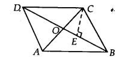

NCERT Solutions for Class 9 Maths Chapter 9 Areas of Parallelograms and Triangles Ex 9.1 are part of NCERT Solutions for Class 9 Maths. Here we have given NCERT Solutions for Class 9 Maths Chapter 9 Areas of Parallelograms and Triangles Ex 9.1.
NCERT Solutions for Class 9 Maths Chapter 9 Areas of Parallelograms and Triangles Ex 9.1
Ex 9.1 Class 9 Maths Question 1
Which of the following figures lie on the same base and between the same parallels. In such a case, write the common base and the two parallels.
Solution:
The figures (i), (iii) and (v) lie on the same base and between the same parallels.
| Common base | Two parallels | |
| Fig. (i) | DC | DC and AB |
| Fig. (iii) | QR | QR and PS |
| Fig. (v) | AD | AD and BQ |
NCERT Solutions for Class 9 Maths Chapter 9 Area of Parallelograms and Triangles (समान्तर चतुर्भुज और त्रिभुजों के क्षेत्रफल) (Hindi Medium) Ex 9.1


NCERT Solutions for Class 9 Maths Chapter 9 Areas of Parallelograms and Triangles Ex 9.2
Ex 9.2 Class 9 Maths Question 1.
In figure, ABCD is a parallelogram, AE ⊥ DC and CF ⊥ AD. If AB = 16 cm, AE = 8 cm and CF = 10 cm, find AD.
Solution:
BSOWe have, AE ⊥ DC and AB = 16 cm
∵ AB = CD [Opposite sides of parallelogram]
∴ CD = 16 cm
Now, area of parallelogram ABCD = CD x AE
= (16 x 8) cm2 = 128 cm2 [∵ AE = 8 cm]
Since, CF ⊥ AD
∴ Area of parallelogram ABCD = AD x CF
⇒ AD x CF = 128 cm
⇒ AD x 10 cm = 128 cm2 [∵ CF= 10 cm]
⇒ AD = \(\frac { 128 }{ 10 }\) cm = 12.8 cm 10
Thus, the required length of AD is 12.8 cm
Ex 9.2 Class 9 Maths Question 2.
If E, F, G and H are respectively the mid-points of the sides of a parallelogram ABCD, show that ar (EFGH) = \(\frac { 1 }{ 2 }\) ar (ABCD).
Solution:
Join GE and HE, where GE || BC || DA and HF || AB || DC
(∵ E, F, G and H are the mid¬points of the sides of a ||gm ABCD).
If a triangle and a parallelogram are on the same base and between the same parallels, then A E U the area of the triangle is equal to half the area of the parallelogram.
Now, ∆EFG and parallelogram EBCG are on the same base EG and between the same parallels EG and BC.
∴ ar(∆EFG) = \(\frac { 1 }{ 2 } ar({ \parallel }^{ gm }EBCG)\) … (1)
Similarly, ar(∆EHG) = \(\frac { 1 }{ 2 } ar({ \parallel }^{ gm }AEGD)\) …(2)
Adding (1) and (2), we get
ar(∆EFG) + ar(∆EHG) = \(\frac { 1 }{ 2 } ar({ \parallel }^{ gm }EBCG)\quad +\quad \frac { 1 }{ 2 } ar({ \parallel }^{ gm }AEGD)\)
= \(\frac { 1 }{ 2 } ar({ \parallel }^{ gm }ABCD)\)
Thus, ar(EFGH) = \(\frac { 1 }{ 2 } ar(ABCD)\)
Ex 9.2 Class 9 Maths Question 3.
P and Q are any two points lying on the sides DC and AD, respectively of a parallelogram ABCD. Show that ar (APB) = ar(BQC).
Solution:
∵ ABCD is a parallelogram.
∴ AB || CD and BC || AD.
Now, ∆APB and parallelogram ABCD are on the same base AB and between the same parallels AB and CD.
∴ ar(∆APB) = \(\frac { 1 }{ 2 } ar({ \parallel }^{ gm }ABCD)\) …….(1)
Also, ∆BQC and parallelogram ABCD are on the same base BC and between the same parallels BGand AD.
∴ ar(∆BQC) = \(\frac { 1 }{ 2 } ar({ \parallel }^{ gm }ABCD)\) …(2)
From (1) and (2), we have ar(∆APB) = ar(∆BQC).
Ex 9.2 Class 9 Maths Question 4.
In figure, P is a point in the interior of a parallelogram ABCD. Show that
(i) ar (APB) + ar (PCD) = \(\frac { 1 }{ 2 } ar(ABCD)\)
(ii) ar (APD) + ar(PBC) = ar (APB) + ar (PCD)
Solution:
We have a parallelogram ABCD, i.e., AB || CD and BC || AD. Let us draw EF || AB and HG || AD through P.
(i) ∆APB and ||gm AEFB are on the same base AB and between the same parallels AB and EF.
∴ ar(∆APB) = \(\frac { 1 }{ 2 } ar({ \parallel }^{ gm }AEFB)\) …(1)
Also, ∆PCD and parallelogram CDEF are on the same base CD and between the same parallels CD and EF.
∴ ar(APCD) = \(\frac { 1 }{ 2 } ar({ \parallel }^{ gm }CDEF)\) …(2)
Adding (1) and (2), we have
ar(∆APB) + ar(∆PCD) = \(\frac { 1 }{ 2 } ar({ \parallel }^{ gm }AEFB)\quad +\quad \frac { 1 }{ 2 } ar({ \parallel }^{ gm }CDEF)\)
⇒ ar(∆APB) + ar(∆PCD) = \(\frac { 1 }{ 2 } ar({ \parallel }^{ gm }ABCD)\) …(3)
(ii) ∆APD and ||gm ∆DGH are on the same base AD and between the same parallels AD and GH.
∴ ar(∆APD) = \(\frac { 1 }{ 2 } ar({ \parallel }^{ gm }ADGH)\) …(4)
Similarly,
ar(∆PBC) = \(\frac { 1 }{ 2 } ar({ \parallel }^{ gm }BCGH)\) …(5)
Adding (4) and (5), we have
ar(∆APD) + ar(∆PBC) = = \(\frac { 1 }{ 2 } ar({ \parallel }^{ gm }ADGH)\quad +\quad \frac { 1 }{ 2 } ar({ \parallel }^{ gm }BCGH)\)
⇒ ar(∆APD) + ar(∆PBC) =\(\frac { 1 }{ 2 } ar({ \parallel }^{ gm }ABCD)\) …….(6)
From (3) and (6), we have
ar(∆APD) + ar(∆PBC) = ar(∆APB) + ar(∆PCD)
Ex 9.2 Class 9 Maths Question 5.
In figure, PQRS and ABRS are parallelograms and X is any point on side BR. Show that
(i) ar (PQRS) = ar (ABRS)
(ii) ar (AXS) = \(\frac { 1 }{ 2 } ar(PQRS)\)
Solution:
(i) Parallelogram PQRS and parallelogram ABRS are on the same base RS and between the same parallels RS and PB.
∴ ar(PQRS) = ar(ABRS)
(ii) AAXS and ||gm ABRS are on the same base AS and between the same parallels AS and BR. *
∴ ar(AXS) = \(\frac { 1 }{ 2 } ar(ABRS)\) …(1)
But ar(PQRS) = ar(ABRS) …(2) [Proved in (i) part]
From (1) and (2), we have
ar(AXS) = \(\frac { 1 }{ 2 } ar(PQRS)\)
Ex 9.2 Class 9 Maths Question 6.
A farmer was having a field in the form of a parallelogram PQRS. She took any point A on RS and joined it to points P and Q. In how many parts the fields is divided? What are the shapes of these parts? The farmer wants to sow wheat and pulses in equal portions of the field separately. How should she do it.
Solution:
The farmer is having the field in the form of parallelogram PQRS and a point A is situated on RS. Join AP and AQ.
Clearly, the field is divided into three parts i.e., in ∆APS, ∆PAQ and ∆QAR.
Since, ∆PAQ and pt.
parallelogram PQRS are on the same base PQ and between the same parallels PQ and RS.
ar(∆PAQ) = \(\frac { 1 }{ 2 } ar({ \parallel }^{ gm }PQRS)\) …(1)
⇒ ar(||gm PQRS) – ar(∆PAQ) = ar(||gm PQRS) – \(\frac { 1 }{ 2 } ar({ \parallel }^{ gm }PQRS)\)
⇒ [ar(∆APS) + ar(∆QAR)] = \(\frac { 1 }{ 2 } ar({ \parallel }^{ gm }PQRS)\) …(2)
From (1) and (2), we have
ar(∆PAQ) = ar[(∆APS) + (∆QAR)]
Thus, the farmer can sow wheat in (∆PAQ) and pulses in [(∆APS) + (∆QAR)] or wheat in [(∆APS) + (∆QAR)] and pulses in (∆PAQ).
NCERT Solutions for Class 9 Maths Chapter 9 Areas of Parallelograms and Triangles Ex 9.3
Ex 9.3 Class 9 Maths Question 1.
In figure, E is any point on median AD of a ∆ABC. Show that ar (ABE) = ar (ACE).
Solution:
We have a ∆ABC such that AD is a median.
∴ ar(∆ABD) = ar(∆ACD) …(1)
[∵ A median divides the triangle into two triangles of equal areas]
Similarly, in ∆BEC, we have
ar(∆BED) = ar(∆DEC) …(2)
Subtracting (2) from (1), we have
ar(∆ABD) – ar(∆BED) = ar(∆ACD) – ar(∆DEC)
⇒ ar(∆ABE) = ar(∆ACE).
Ex 9.3 Class 9 Maths Question 2.
In a triangle ABC, E is the mid-point of median AD. Show that ax (BED) = \(\frac { 1 }{ 2 } ar(ABC)\).
Solution:
We have a ∆ABC and its median AD.
Let us join B and E.
Since, a median divides the triangle into two triangles of equal area.
ar (∆ABD) = \(\frac { 1 }{ 2 } ar(\Delta ABC)\) …….(1)
Now, in ∆ABD, BE is a median.
[ ∵ E is the mid-point of AD]
∴ ar(∆BED) = \(\frac { 1 }{ 2 } ar(\Delta ABC)\) …(2)
From (1) and (2), we have
ar(∆BED) = \(\frac { 1 }{ 2 }\) [\(\frac { 1 }{ 2 } ar(\Delta ABC)\) ]
⇒ ar(∆BED) = \(\frac { 1 }{ 4 } ar(\Delta ABC)\)
Ex 9.3 Class 9 Maths Question 3.
Show that the diagonals of a parallelogram divide it into four triangles of equal area.
Solution:
We have a parallelogram ABCD (say)
such that its diagonals intersect at O.
∵Diagonals of a parallelogram bisect each other.
∴ AO = OC and BO = OD
Let us draw CE ⊥ BD.
Now, ar(∆BOC) = \(\frac { 1 }{ 2 }\)BO x CE and
ar(∆DOC) = \(\frac { 1 }{ 2 }\)OD x CE

Since, BO = OD
∴ ar(∆BOC) = ar(∆DOC) …(1)
Similarly, ar(∆AOD) = ar(∆DOC) …(2)
and ar(∆AOB) = ar(∆BOC) …(3)
From (1), (2) and (3), we have
ar(∆AOB) = ar(∆BOC) = ar(∆COD) = ar(∆DOA)
Thus, the diagonals of a parallelogram divide it into four triangles of equal area.
Ex 9.3 Class 9 Maths Question 4.
In figure, ABC and ABD are two triangles on the same base AB. If line segment CD is bisected by AB at O, show that ar(ABC) = ar(ABD)
Solution:
we have ∆ABC and ∆ABD are on the same base AB.
∵ CD is bisected at O. [Given]
∴ CO = OD
Now, in ∆ACD, AO is a median
∴ ar(∆OAC) = ar(∆OAD) …(1)
Again, in ∆BCD, BO is a median
∴ ar(∆OBC) = ar(∆ODB) …(2)
Adding (1) and (2), we have
ar(∆OAQ + ar(∆OBQ) = ar(∆OAD) + ar(∆ODB)
⇒ ar(∆ABC) = ar(∆ABD)
Ex 9.3 Class 9 Maths Question 5.
D,E and F are respectively the mid-points of the sides BC, CA and AB of a ∆ABC. Show that
(i) BDEF is a parallelogram.
(ii) ar(DEF) = \(\frac { 1 }{ 4 } ar(ABC)\)
(iii) ar(BDEF) = \(\frac { 1 }{ 4 } ar(ABC)\)
Solution:
We have ∆ABC such
that D,E and Fare the mid-points of BC, CA and AB respectively.
(i) In ∆ABC, E and F are the mid-points of AC and B D C AB respectively.
∴ EF || BC [Mid-point theorem]
⇒ EF || BD
Also, EF = \(\frac { 1 }{ 2 } (BC)\)
⇒ EF = BD [D is the mid – point of BC]
Since BDEF is a quadrilateral whose one pair of opposite sides is parallel and of equal lengths.
∴ BDEF is a parallelogram.
(ii) We have proved that BDEF is a parallelogram.
Similarly, DCEF is a parallelogram and DEAF is also a parallelogram.
Now, parallelogram BDEF and parallelogram DCEF are on the same base EF and between the same parallels BC and EF.
∴ ar(||gm BDEF) = ar(||gm DCEF)
⇒ \(\frac { 1 }{ 2 }\)ar(||gm BDEF) = \(\frac { 1 }{ 2 }\)ar(||gm DCEF)
⇒ ar(∆BDF) = ar(∆CDE) …(1)
[Diagonal of a parallelogram divides it into two triangles of equal area]
Similarly, ar(∆CDE) = ar(∆DEF) …(2)
and ar(∆AEF) = ar(∆DEF) …(3)
From (1), (2) and (3), we have
ar(∆AEF) = ar(∆FBD) = ar(∆DEF) = ar(∆CDE)
Thus, ar(∆ABC) = ar(∆AEF) + ar(∆FBD) + ar(∆DEF) + ar(∆CDE) = 4 ar(∆DEF)
⇒ ar(∆DEF) = \(\frac { 1 }{ 4 }\)ar(∆ABC)
(iii) We have, ar (||gm BDEF) = ar(∆BDF) + ar(∆DEF)
= ar(∆DEF) + ar(∆DEF) [∵ ar(∆DEF) = ar(∆BDF)]
2ar(∆DEF) = 2[\(\frac { 1 }{ 4 }\)ar(∆ABC)]
= \(\frac { 1 }{ 2 }\)ar(∆ABC)
Thus, ar (||gm BDEF) = \(\frac { 1 }{ 2 }\)ar(∆ABC)
Ex 9.3 Class 9 Maths Question 6.
In figure, diagonals AC and BD of quadrilateral ABCD intersect at 0 such that OB = OD. If AB = CD, then show that
(i) ar(DOC) = ar(AOB)
(ii) ar (DCB) = ar (ACB)
(iii) DA || CB or ABCD is a parallelogram
Solution:
We have a quadrilateral ABCD whose diagonals AC and BD intersect at O.
We also have that OB = OD, AB = CD Let us draw DE ⊥ AC and BF ⊥ AC
(i) In ∆DEO and ∆BFO, we have
DO = BO [Given]
∠DOE = ∠BOF [Vertically opposite angles]
∠DEO = ∠BFO [Each 90°]
∴ ∆DEO ≅ ∆BFO [By A AS congruency]
⇒ DE = BF [By C.P.C.T.]
and ar(∆DEO) = ar(∆BFO) …(1)
Now, in ∆DEC and ∆BFA, we have
∠DEC = ∠BFA [Each 90°]
DE = BF [Proved above]
DC = BA [Given]
∴ ∆DEC ≅ ∆BFA [By RHS congruency]
⇒ ar(∆DEC) = ar(∆BFA) …(2)
and ∠1 = ∠2 …(3) [By C.P.C.T.]
Adding (1) and (2), we have
ar(∆DEO) + ar(∆DEC) = ar(∆BFO) + ar(∆BFA)
⇒ ar(∆DOC) = ar(∆AOB)
(ii) Since, ar(∆DOC) = ar(∆AOB) [Proved above]
Adding ar(∆BOC) on both sides, we have
ar(∆DOC) + ar(∆BOC) = ar(∆AOB) + ar(∆BOC)
⇒ ar(∆DCB) = ar(∆ACB)
(iii) Since, ∆DCS and ∆ACB are both on the same base CB and having equal areas.
∴ They lie between the same parallels CB and DA.
⇒ CB || DA
Also ∠1 = ∠2, [By (3)]
which are alternate interior angles.
So, AB || CD
Hence, ABCD is a parallelogram.
Ex 9.3 Class 9 Maths Question 7.
D and E are points on sides AB and AC respectively of ∆ ABC such that ar (DBC) = ar (EBC). Prove that DE || BC.
Solution:
We have ∆ABC and points D and E are such that ar(DBC) = ar{EBC)
Since ∆DBC and ∆EBC are on the same base BC and having same area.

∴ They must lie between the same parallels DE and BC.
Hence, DE || BC
Ex 9.3 Class 9 Maths Question 8.
XY is a line parallel to side BC of a ∆ ABC. If BE ||AC and CF || AB meet XY at E and F respectively, show that ar (ABE) =ar (ACF)
Solution:
We have a ∆ABC such that XY || BC,
BE || AC and CF || AB.
Since, XY ||BC and BE || CY
∴ BCYE is a paralleloam.
Now, the parallelogram BCYE and ∆ABE are on the same base 8E and between the same parallels BE and AC.
∴ ar(∆ABE) = \(\frac { 1 }{ 2 } ar({ \parallel }^{ gm }BCYE)\) …..(1)
Again, CF || AB [Given]
XY || BC [Given]
CF || BX and XF || BC
∴ BCFX is a parallelogram.
Now, ∆ACF and parallelogram BCFX are on the same base CF and between the same parallels AB and CF.
∴ar(∆ACF) = \(\frac { 1 }{ 2 } ar({ \parallel }^{ gm }BCFX)\) …(2)
Also, parallelogram BCFX and parallelogram BCYE are on the same base BC and between the same parallels BC and EF.
∴ ar(||gm BCFX) = ar(||gm BCYE) ………(3)
From (1), (2) and (3), we get
ar(∆BE) = ar(∆ACF)
Ex 9.3 Class 9 Maths Question 9.
The side AB of a parallelogram ABCD is produced to any point P. A line through A and parallel to CP meets CB produced at Q and then A parallelogram PBQR is completed (see figure).
Show that ax (ABCD) = ar(PBQR).
[Hint Join AC and PQ. Now compare ar (ACQ) and ar (APQ).]

Solution:
Let us join AC and PQ.
ABCD is a parallelogram [Given]
and AC is its diagonal, we know that diagonal of a parallelogram divides it into two triangles of equal areas.
∴ ar(∆ABC) = \(\frac { 1 }{ 2 } ar({ \parallel }^{ gm }ABCD)\) …(1)
Also, PBQR is a parallelogram [Given]
and QP is its diagonal.
∴ ar(∆BPQ) = \(\frac { 1 }{ 2 } ar({ \parallel }^{ gm }PBQR)\) …(2)
Since, ∆ACQ and AAPQ are on the same base AQ and between A the same parallels AQ and CP.

∴ ar(∆ACQ) = ar(∆APQ)
⇒ ar(∆ACQ) – ar(∆ABQ)
= ar(∆APQ) – ar(∆ABQ)
[Subtracting ar(∆ABQ) from both sides]
⇒ ar(∆ABC) = ar(∆BPQ) …(3)
From (1), (2) and (3), we get
\(\frac { 1 }{ 2 } ar({ \parallel }^{ gm }ABCD)\) = \(\frac { 1 }{ 2 } ar({ \parallel }^{ gm }PBQR)\)
⇒ ar( ||gm ABCD) = ar(||gm PBQR)
Ex 9.3 Class 9 Maths Question 10.
Diagonals AC and BD of a trapezium ABCD with AB || DC intersect each other at O. Prove that ar (AOD) = ar (BOC)
Solution:
BBlliWWp have a trapezium ABCD having AB || CD and its diagonals AC and BD intersect each other at O.
Since, triangles on the same base and between the same parallels have equal areas.
∆ABD and ∆ABC are on the same base AB and between the same parallels AB and DC
∴ ar(∆ABD) = ar(∆ABC)
Subtracting ar(∆AOB) from both sides, we get
ar(∆ABD) – ar(∆AOB) = ar(∆ABC) – ar(∆AOB)
⇒ ar(∆AOD) = ar(∆BOC)
Ex 9.3 Class 9 Maths Question 11.
In figure, ABCDE is a pentagon. A line through B parallel to AC meets DC produced at F. Show that
(i) ar (ACB) = ar (ACF)
(ii) ar (AEDF) = ar (ABCDE)

Solution:
We have a pentagon ABCDE in which BF || AC and DC is produced to F.
(i) Since, the triangles between the same parallels and on the same base are equal in area.
∆ACB and ∆ACF are on the same base AC and between the same parallels AC and BF.
∴ ar(∆ACB) = ar(∆ACF)
(ii) Since, ar(∆ACB) = ar(∆ACF) [Proved above]
Adding ar(quad. AEDC) to both sides, we get
⇒ ar(∆ACB) + ar(quad. AEDC) = ar(∆ACF) + ar(quad. AEDC)
∴ ar(ABCDE) = ar(AEDF)
Ex 9.3 Class 9 Maths Question 12.
A villager Itwaari has a plot of land of the shape of a quadrilateral. The Gram Panchayat of the village decided to take over some portion of his plot from one of the corners to construct a Health Centre. Itwaari agrees to the above proposal with the condition that he should be given equal amount of land in lieu of his land adjoining his plot so as to form a triangular plot. Explain how this proposal will be implemented.
Solution:
We have a plot in the form of a quadrilateral ABCD.
Let us draw DF || AC and join AF and CF.
Now, ∆DAF and ∆DCF are on the same base DF and between the same parallels AC and DF.
∴ ar(ADAF) = ar(ADCF)
Subtracting ar(∆DEF) from both sides, we get
ar(∆DAF) – ar(∆DEF) = ar(∆DCF) – ar(∆DEF)
⇒ ar(∆ADE) = ar(∆CEF)
The portion of ∆ADE can be taken over by the Gram Panchayat by adding the land (∆CEF) to his (Itwaari) land so as to form a triangular plot,
i.e. ∆ABF.
Let us prove that ar(∆ABF) = ar(quad. ABCD), we have
ar(ACEF) = ar(AADE) [Proved above]
Adding ar(quad. ABCE) to both sides, we get
ar(∆CEF) + ar(quad. ABCE) = ar(∆ADE) + ar (quad. ABCE)
⇒ ar(∆ABF) = ar (quad. ABCD)
Ex 9.3 Class 9 Maths Question 13.
ABCD is a trapezium with AB || DC. A line parallel to AC intersects AB at X and BC at Y. Prove that ar(ADX) = ar(ACY). [Hint Join IX]
Solution:
We have a trapezium ABCD such that AB || DC.
XY || AC meets AB at X and BC at Y. Let us join CX.
∆ADX and ∆ACX are on the same base AX and between the same parallels AX and DC.
∴ ar(∆ADX) = ar(∆ACX) …(1)
∵∆ACX and ∆ACY are on the same base AC and between the same parallels AC and XY.
∴ ar(∆ACX) = ar(∆ACY) …(2)
From (1) and (2), we have
ar(∆ADX) = ar(∆ACY)
Ex 9.3 Class 9 Maths Question 14.
In figure, AP || BQ || CR. Prove that ar(AQC) = ax(PBR).

Solution:
We have, AP || BQ || CR
∵ ∆BCQ and ∆BQR are on the same base BQ and between the same parallels BQ and CR.
∴ ar(∆BCQ) = ar(∆BQR) …(1)
∵ ∆ABQ and ∆PBQ are on the same base BQ and between the same parallels AP and BQ.
∴ ar(∆ABQ) = ar(∆PBQ) …(2)
Adding (1) and (2), we have
ar(∆BCQ) + ar(∆ABQ) = ar(∆BQR) + ar(∆PBQ)
⇒ ar(∆AQC) = ar(∆PBR)
Ex 9.3 Class 9 Maths Question 15.
Diagonals AC and BD of a quadrilateral ABCD intersect at 0 in such a way that ax(AOD) = ar(BOC). Prove that ABCD is a trapezium.
Solution:
We have a quadrilateral ABCD and its diagonals AC and BD intersect at O such that
ar(∆AOD) = ar(∆BOC) [Given]
Adding ar(∆AOB) to both sides, we have
ar(∆AOD) + ar(∆AOB) = ar(∆BOC) + ar(∆AOB)
⇒ ar(∆ABD) = ar(∆ABC)
Also, they are on the same base AB.
Since, the triangles are on the same base and having equal area.
∴ They must lie between the same parallels.
∴ AB || DC
Now, ABCD is a quadrilateral having a pair of opposite sides parallel.
So, ABCD is a trapezium.
Ex 9.3 Class 9 Maths Question 16.
In figure ax(DRC) = ar(DPC) and ai(BDP) = ar(ARC). Show that both the quadrilaterals ABCD and DCPR are trapeziums.
Solution:
tfclfiftWe have, ar(∆DRC) = ar(∆DPC) [Given]
And they are on the same base DC.
∴ ∆DRC and ∆DPC must lie between the same parallels.
So, DC || RP i.e.r a pair of opposite sides of quadrilateral DCPR is parallel.
∴ Quadrilateral DCPR is a trapezium.
Again, we have
ar(∆BDP) = ar(∆ARC) [Given] …(1)
Also, ar(∆DPC) = ar(∆DRC) [Given] …(2)
Subtracting (2) from (1), we get
ar(∆BDP) – ar(∆DPC) = ar(∆ARQ – ar(∆DRQ
⇒ ar(∆BDC) = ar(∆ADC)
And they are on the same base DC.
∴ ABDC and AADC must lie between the same parallels.
So, AB || DC i.e. a pair of opposite sides of quadrilateral ABCD is parallel.
∴ Quadrilateral ABCD is a trapezium.
NCERT Solutions for Class 9 Maths Chapter 9 Areas of Parallelograms and Triangles Ex 9.4
Ex 9.4 Class 9 Maths Question 1.
Parallelogram ABCD and rectangle ABEF are on the same base AB and have equal areas. Show that the perimeter of the parallelogram is greater than that of the rectangle.
Solution:
We have a parallelogram ABCD and rectangle ABEF such that
ar(||gm ABCD) = ar( rect. ABEF)
AB = CD [Opposite sides of parallelogram]
and AB = EF [Opposite sides of a rectangle]
⇒ CD = EF
⇒ AB + CD = AB + EF … (1)
BE < BC and AF < AD [In a right triangle, hypotenuse is the longest side] ⇒ (BC + AD) > (BE + AF) …(2)
From (1) and (2), we have
(AB + CD) + (BC+AD) > (AB + EF) + BE + AF)
⇒ (AB + BC + CD + DA) > (AB + BE + EF + FA)
⇒ Perimeter of parallelogram ABCD > Perimeter of rectangle ABEF.
Ex 9.4 Class 9 Maths Question 2.
In figure, D and E are two points on BC such that BD = DE = EC. Show that ar(ABD) = ar(ADE) = ar(AEC).
Solution:
Let us draw AF, perpendicular to BC
such that AF is the height of ∆ABD, ∆ADE and ∆AEC.
Ex 9.4 Class 9 Maths Question 3.
In figure, ABCD, DCFE and ABFE are parallelograms. Show that ar(ADE) = ax(BCF).
Solution:
Since, ABCD is a parallelogram [Given]
∴ Its opposite sides are parallel and equal.
i.e., AD = BC …(1)
Now, ∆ADE and ∆BCF are on equal bases AD = BC [from (1)] and between the same parallels AB and EF.
So, ar(∆ADE) = ar(∆BCF).
Ex 9.4 Class 9 Maths Question 4.
In figure, ABCD is a parallelogram and BC is produced to a point Q such that AD = CQ. If AQ intersect DC at P, show that ar(BPC) = ax(DPQ).[Hint Join AC.]
Solution:
We have a parallelogram ABCD and AD = CQ. Let us join AC.
We know that triangles on the same base and between the same parallels are equal in area.
Since, ∆QAC and ∆QDC are on the same base QC and between the same parallels AD and BQ.
∴ ar(∆QAC) = ar(∆QDC)
Subtracting ar(∆QPC) from both sides, we have
ar(∆QAQ – ar(∆QPC) = ar(∆QDC) – ar(∆QPC)
⇒ ar(∆PAQ = ar(∆QDP) …(1)
Since, ∆PAC and ∆PBC are on the same base PC and between the same parallels AB and CD.
∴ ar(∆PAC) = ar(∆PBC) …(2)
From (1) and (2), we get
ar(∆PBC) = ar(∆QDP)
Ex 9.4 Class 9 Maths Question 5.
In figure, ABC and BDE are two equilateral triangles such that D is the mid-point of BC. If AE intersects BC at F, Show that

[Hint Join EC and AD. Show that BE || AC and DE || AB, etc.]
Solution:
Let us join EC and AD. Draw EP ⊥ BC.
Let AB = BC = CA = a, then
BD = \(\frac { a }{ 2 }\) = DE = BE
(ii) Since, ∆ABC and ∆BED are equilateral triangles.
⇒ ∠ACB = ∠DBE = 60°
⇒ BE || AC
∆BAE and ∆BEC are on the same base BE and between the same parallels BE and AC.
ar(∆BAE) = ar(∆BEC)
⇒ ar(∆BAE) = 2 ar(∆BDE) [ DE is median of ∆EBC. ∴ ar(∆BEC) = || ar(∆BDE)]
⇒ ar(ABDE) = \(\frac { 1 }{ 2 }\)ar(∆BAE)
(iii) ar(∆ABC) = 4 ar(∆BDE)[Proved in (i) part]
ar(∆BEC) = 2 ar(∆BDE)
[ ∵ DE is median of ∆BEC]
⇒ ar(∆ABC) = 2 ar(∆BEC)
(iv) Since, ∆ABC and ∆BDE are equilateral triangles.
⇒ ∠ABC = ∠BDE = 60°
⇒ AB || DE
∆BED and ∆AED are on the same base ED and between the same parallels AB and DE.
∴ ar(∆BED) = ar(∆AED)
Subtracting ar(AEFD) from both sides, we get
⇒ ar(∆BED) – ar(∆EFD) = ar(∆AED) – ar(∆EFD)
⇒ ar(∆BEE) = ar(∆AFD)
(v) In right angled ∆ABD, we get
From (1) and (2), we get
ar(∆AFD) = 2 ar(∆EFD)
ar(∆AFD) = ar(∆BEF) [From (iv) part]
⇒ ar(∆BFE) = 2 ar(∆EFD)
(vi) ar(∆AFC) = ar(∆AFD) + ar(∆ADC)
= ar(∆BFE) + \(\frac { 1 }{ 2 }\) ar(∆ABC) [From (iv) part]
= ar(∆BFE) + \(\frac { 1 }{ 2 }\) x 4 x ar(∆BDE) [From (i) part]
= ar(∆BFE) + 2ar(∆BDE)
= 2ar(∆FED) + 2[ar(∆BFE) + ar(∆FED)]
= 2ar(∆FED) + 2[2ar(∆FED) + ar(∆FED)] [From (v) part]
= 2ar(∆FED) + 2[3ar(∆FED)]
= 2ar(∆FED) + 6ar(∆FED)
= 8ar(∆FED)
∴ ar(∆FED) = \(\frac { 1 }{ 8 }\) ar(∆AFC)
Ex 9.4 Class 9 Maths Question 6.
Diagonals AC and BD of a quadrilateral ABCD intersect each other at P. Show that
ar(APB) x ar(CPD) = ar(APD) x ar(BPC).
[Hint From A and C, draw perpendiculars to BD.]
Solution:
We have a quadrilateral ABCD such that its diagonals AC and BD intersect at P.
Let us draw AM ⊥ BD and CN ⊥ BD.
Ex 9.4 Class 9 Maths Question 7.
P and Q are respectively the mid-points of sides AB and BC of a triangle ABC and R is the mid-point of AP, show that
Solution:
We have a ∆ABC such that P is the mid-point of AB and Q is the mid-point of BC.
Also, R is the mid-point of AP. Let us join AQ, RQ, PC and PC.
(i) In ∆APQ, R is the mid-point of AP. [Given] B
∴RQ is a median of ∆APQ.
⇒ ar(∆PRQ) = \(\frac { 1 }{ 2 }\)ar(∆APQ) …(1)
In ∆ABQ, P is the mid-point of AB.
∴ QP is a median of ∆ABQ.
∴ ar(∆APQ) = \(\frac { 1 }{ 2 }\)ar(∆ABQ) …(2)
Ex 9.4 Class 9 Maths Question 8.
In figure, ABC is a right triangle right angled at A. BCED, ACFG and ABMN are squares on the sides BC, CA and AB respectively. Line segment AX ⊥ DE meets BC at Y. Show that
(i) ∆MBC = ∆ABD
(ii) ar(BYXD) = 2 ar(MBC)
(iii) ar(BYXD) = ax(ABMN)
(iv) ∆FCB ≅ ∆ACE
(v) ar(CYXE) = 2 ar(FCB)
(vi) ar(CYXE) = ax(ACFG)
(vii) ar(BCED) = ar(ABMN) + ar(ACFG)
Solution:
We have a right ∆ABC such that BCED, ACFG and ABMN are squares on its sides BC, CA and AB respectively. Line segment AX 1 DE is also drawn such that it meets BC at Y.
(i) ∠CBD = ∠MBA [Each90°]
∴ ∠CBD + ∠ABC = ∠MBA + ∠ABC
(By adding ∠ABC on both sides)
or ∠ABD = ∠MBC
In ∆ABD and ∆MBC, we have
AB = MB [Sides of a square]
BD = BC
∠ABD = ∠MBC [Proved above]
∴ ∆ABD = ∆MBC [By SAS congruency]
(ii) Since parallelogram BYXD and ∆ABD are on the same base BD and between the same parallels BD and AX.
∴ ar(∆ABD) = \(\frac { 1 }{ 2 }\)ar(||gm BYXD)
But ∆ABD ≅ ∆MBC [From (i) part]
Since, congruent triangles have equal
areas.
∴ ar(∆MBC) = \(\frac { 1 }{ 2 }\)ar(||gm BYXD)
⇒ ar(||gm BYXD) = 2ar(∆MBC)
(iii) Since, ar(||gm BYXD) = 2ar(∆MBC) …(1) [From (ii) part]
and or(square ABMN) = 2or(∆MBC) …(2)
[ABMN and AMBC are on the same base MB and between the same parallels MB and NC]
From (1) and (2), we have
ar(BYXD) = ar(ABMN) .
(iv) ∠FCA = ∠BCE (Each 90°)
or ∠FCA+ ∠ACB = ∠BCE+ ∠ACB
[By adding ∠ACB on both sides]
⇒ ∠FCB = ∠ACE
In ∆FCB and ∆ACE, we have
FC = AC [Sides of a square]
CB = CE [Sides of a square]
∠FCB = ∠ACE [Proved above]
⇒ ∆FCB ≅ ∆ACE [By SAS congruency]
(v) Since, ||gm CYXE and ∆ACE are on the same base CE and between the same parallels CE and AX.
∴ ar(||gm CYXE) = 2ar(∆ACE)
But ∆ACE ≅ ∆FCB [From (iv) part]
Since, congruent triangles are equal in areas.
∴ ar (||<gm CYXE) = 2ar(∆FCB)
(vi) Since, ar(||gm CYXE) = 2ar(∆FCB) …(3)
[From (v) part]
Also (quad. ACFG) and ∆FCB are on the same base FC and between the same parallels FC and BG.
⇒ ar(quad. ACFG) = 2ar(∆FCB) …(4)
From (3) and (4), we get
ar(quad. CYXE) = ar(quad. ACFG) …(5)
(vii) We have ar(quad. BCED)
= ar(quad. CYXE) + ar(quad. BYXD)
= ar(quad. CYXE) + ar(quad. ABMN)
[From (iii) part]
Thus, ar (quad. BCED)
= ar(quad. ABMN) + ar(quad. ACFG)
[From (vi) part]
NCERT Solutions for Class 9 Maths
- Chapter 1 Number systems
- Chapter 2 Polynomials
- Chapter 3 Coordinate Geometry
- Chapter 4 Linear Equations in Two Variables
- Chapter 5 Introduction to Euclid Geometry
- Chapter 6 Lines and Angles
- Chapter 7 Triangles
- Chapter 8 Quadrilaterals
- Chapter 9 Areas of Parallelograms and Triangles
- Chapter 10 Circles
- Chapter 11 Constructions
- Chapter 12 Heron’s Formula
- Chapter 13 Surface Areas and Volumes
- Chapter 14 Statistics
- Chapter 15 Probability
- Class 9 Maths (Download PDF)
We hope the NCERT Solutions for Class 9 Maths Chapter 9 Areas of Parallelograms and Triangles Ex 9.1 help you. If you have any query regarding NCERT Solutions for Class 9 Maths Chapter 9 Areas of Parallelograms and Triangles Ex 9.1, drop a comment below and we will get back to you at the earliest.